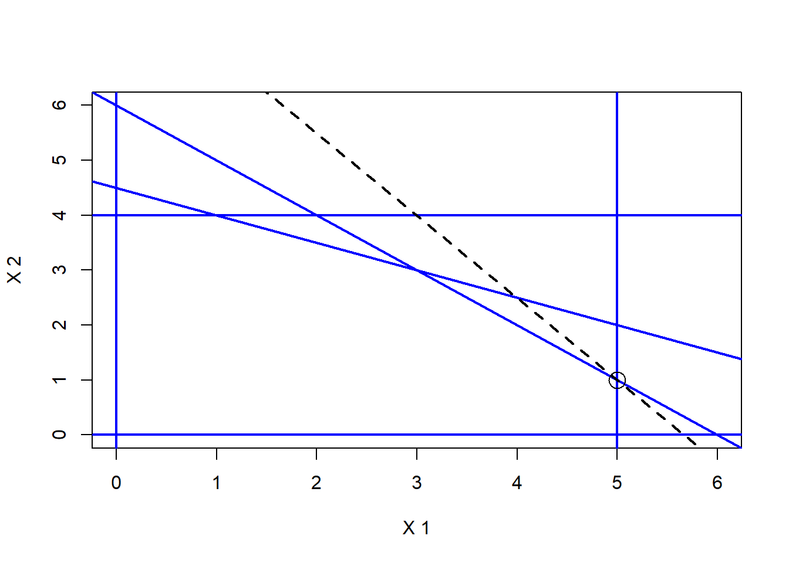
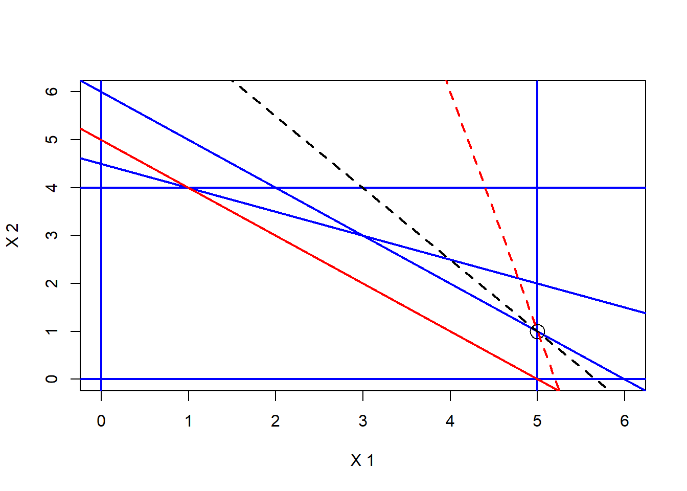

library(ompr)
library(ompr.roi)
library(ROI)
library(ROI.plugin.glpk)
library(ROI.plugin.lpsolve)
# Parameters
c <- c(3, 2)
A <- matrix(c(1, 1,
1, 2,
1, 0,
0, 1),
nrow = 4, byrow = TRUE)
b <- c(6, 9, 5, 4)
# Sets
I <- 1:length(b)
J <- 1:length(c)
# OMPR Model
model <- MIPModel() |>
add_variable(x[j], j = J, type = "continuous", lb = 0) |>
set_objective(sum_expr(c[j] * x[j], j = J), sense = "max") |>
add_constraint(sum_expr(A[i, j] * x[j], j = J) <= b[i], i = I)
# Solution
result_lpsolve <- solve_model(model, with_ROI(solver = "lpsolve"))
#result_glpk <- solve_model(model, with_ROI(solver = "glpk"))
result_lpsolve$solutionThis post summarizes some key insights regarding linear optimization.
Primal and Dual Linear Programs
To any linear programming problem a corresponding dual problem can be formulated. The dual formulation brings additional insights and might help finding solutions more efficient.
Primal Problem
\[ \max_{\mathbf{x} \geq 0} \min_{\mathbf{y} \geq 0} L(\mathbf{x}, \mathbf{y}) = \mathbf{c}^\top \mathbf{x} + \mathbf{y}^\top (\mathbf{b} - \mathbf{A} \mathbf{x}) \] \[ \Longleftrightarrow \] \[ \begin{aligned} \text{max } & z = \mathbf{c}^\top \mathbf{x} \\ \text{s.t. } & \mathbf{Ax} \leq \mathbf{b} \\ & \mathbf{x} \geq 0 \end{aligned} \]
- \(\mathbf{x} \in \mathbb{R}^n\): decision variables
- \(\mathbf{c} \in \mathbb{R}^n\): objective coefficients
- \(\mathbf{A} \in \mathbb{R}^{m \times n}\): constraint matrix
- \(\mathbf{b} \in \mathbb{R}^m\): right-hand side (RHS)
Dual Problem
\[ \min_{\mathbf{y} \geq 0} \max_{\mathbf{x} \geq 0} L(\mathbf{x}, \mathbf{y}) = \mathbf{y}^\top \mathbf{b} + (\mathbf{y}^\top \mathbf{A} - \mathbf{c}^\top) \mathbf{x} \] \[ \Longleftrightarrow \] \[ \begin{aligned} \text{min } & w = \mathbf{y}^\top \mathbf{b} \\ \text{s.t. } & \mathbf{A}^\top \mathbf{y} \geq \mathbf{c} \\ & \mathbf{y} \geq 0 \end{aligned} \]
- \(\mathbf{y} \in \mathbb{R}^m\): dual variables (shadow prices of the ressources)
- \(\mathbf{b} \in \mathbb{R}^m\): resource limits
- \(\mathbf{A}^\top \mathbf{y} \geq \mathbf{c}\): ensures feasibility relative to primal objective
Simplex Algorithm (Primal)
To solve the (primal) problem, the simplex algorithm is used which operates using a simplex tableau. Adding slack variables to the above problem the tableau looks like this initially with objective value \(z -\mathbf{c}^\top \mathbf{x} = 0\) and identity matrix \(\mathbf{I} \in \mathbb{R}^{m \times m}\).
\[ \begin{array}{cc|c|c|c} & \text{obj. val.} & \text{decis. var.} & \text{slack var.} & \text{RHS}\\ \text{obj. val.} & 1 & -\mathbf{c}^\top & \mathbf{0}^\top & 0 \\ \hline \text{basic var.} & \mathbf{0} & \mathbf{A} & \mathbf{I} & \mathbf{b} \end{array} \]
In every step of the simplex algorithm a selected basic variable leaves the basis and a non-basic variable enters it, updating the previous tableau. This is achieved by multiplying a pivot matrix with the tableau. The variable that brings the highest objective value increase is selected to enter the basis and the leaving variable is selected such that feasibility is ensured.
Afterwards the new tableau looks like this:
\[ \begin{array}{cc|c|c|c} & \text{obj. val.} & \text{decis. var.} & \text{slack var.} & \text{RHS}\\ \text{obj. val.} & 1 & -\mathbf{c}^\top + \mathbf{c}_\mathbf{B}^\top \mathbf{B}^{-1} \mathbf{A} & \mathbf{c}_\mathbf{B}^\top \mathbf{B}^{-1} & \mathbf{c}_\mathbf{B}^\top \mathbf{B}^{-1} \mathbf{b} \\ \hline \text{basic var.} & \mathbf{0} & \mathbf{B}^{-1} \mathbf{A} & \mathbf{B}^{-1} & \mathbf{B}^{-1} \mathbf{b} \end{array} \]
For this representation the decision and slack variables have been partitioned into \(\begin{bmatrix} \mathbf{x}_B \\ \mathbf{x}_N \end{bmatrix}\) and \(\big[ \mathbf{A} \;\; \mathbf{I} \big]\) into \(\big[ \mathbf{B} \;\; \mathbf{N} \big]\), where
- \(\mathbf{x_B} \in \mathbb{R}^m\): Basic variables with \(\mathbf{c_B}\) as corresponding coefficients.
- \(\mathbf{B} \in \mathbb{R}^{m \times m}\): Basis matrix with values from the original tableau.
The tableau holds the following information:
Primal solution: \(\mathbf{x}_B = \mathbf{B}^{-1}\mathbf{b}\).
Opportunity costs: Coefficients in the first row. They represent the potential objective value change when one unit of the corresponding decision variable (reduced costs) or slack variable (shadow prices) changes.
Reduced costs (dual slack variables), under the primal decision variables: \(-\mathbf{c}^\top + \mathbf{c}_\mathbf{B}^\top \mathbf{B}^{-1} \mathbf{A}\). Interpretation: The original coefficients get reduced with every pivot step until optimality, representing the decreasing opportunity to raise the objective value. A negative value (during optimization) shows a potential objective value increase, a positive value shows a potential objective value decrease.
Shadow prices (dual decision variables), under the primal slack variables: \(\mathbf{c}_B^\top \mathbf{B}^{-1} = \mathbf{y}^\top\). Interpretation: A negative value (during optimization) shows the potential objective value increase of reallocating this capacity. A positive value shows a potential objective value increase when the capacity is expanded, i. e. it is the maximum price one is willing to pay for this expansion.
- Primal optimality corresponds to dual feasibility:
- Reduced costs nonnegative.
\[ \begin{aligned} &-\mathbf{c}^\top + \mathbf{c}_\mathbf{B}^\top \mathbf{B}^{-1} \mathbf{A} \geq \mathbf{0} \\ \Leftrightarrow \quad & \mathbf{c}_\mathbf{B}^\top \mathbf{B}^{-1} \mathbf{A} \geq \mathbf{c}^\top \\ \Leftrightarrow \quad & \mathbf{A}^\top \mathbf{y} \geq \mathbf{c} \end{aligned} \]
- Shadow prices nonnegative.
\[ \begin{aligned} & \mathbf{c}_B^\top \mathbf{B}^{-1} \geq \mathbf{0} \\ \Leftrightarrow \quad & \mathbf{y}^\top \geq \mathbf{0} \end{aligned} \]
- The primal objective value corresponds to the dual objective value: \(\mathbf{c}_B^\top \mathbf{x}_B = \mathbf{c}_B^\top \mathbf{B}^{-1}\mathbf{b} = \mathbf{y}^\top \mathbf{b}\)
Duality Theory
Weak Duality Theorem
If \(\mathbf{x}\) is a feasible solution to the primal linear problem and \(\mathbf{y}\) is a feasible solution to the corresponding dual linear problem, then
\[ \mathbf{c}^\top \mathbf{x} \leq \mathbf{y}^\top \mathbf{b}. \] That is, the objective value of any feasible primal solution is always less than or equal (lower bound) to the objective value of any feasible dual solution (upper bound).
Strong Duality Theorem
If a feasible solution \(\mathbf{x}^*\) to the primal linear problem and a feasible solution \(\mathbf{y}^*\) to the corresponding dual linear problem satisfy
\[ \mathbf{c}^\top \mathbf{x}^* = \mathbf{y}^{*\top} \mathbf{b} \] then \(\mathbf{x}^*\) and \(\mathbf{y}^*\) are optimal solutions.
Complementary Slackness Theorem
A pair of feasible solutions to the primal and dual linear programs are optimal only if each constraint’s slack in one problem is matched by a zero variable in the other. In other words:
- If a primal variable is positive, the corresponding dual constraint must be tight (no slack).
\[ (\mathbf{y}^{*\top} \mathbf{A} - \mathbf{c}^\top)\mathbf{x}^* = 0 \]
- If a dual variable is positive, the corresponding primal constraint must be tight (no slack).
\[ \mathbf{y}^{*\top} (\mathbf{b} - \mathbf{A}\mathbf{x}^*) = 0 \]
Note that the expressions in parenthesis are exactly the definition of slack in the dual and primal linear problem respectively.
Primal and Dual Simplex
- The Primal Simplex starts with primal feasibility and tries to reach dual feasibility while maintaining primal feasibility.
- The Dual Simplex starts with dual feasibility and tries to reach primal feasibility while maintaining dual feasibility.
Sensitivity Analysis
In the sensitivity analysis one analyzes how the solution changes if parameters change.
| Case | Tableau values | Interpretation | Calculation |
|---|---|---|---|
| BV: Change of \(b_i \rightarrow b_{i,new}\) with basic slack var. | Shadow price: Zero Slack variable: Positive |
Increase is not beneficial and does not have any effects. Decrease up to slack amount possible without affecting optimality of basis structure. |
|
| NBV: Change of \(b_i \rightarrow b_{i,new}\) with nonbasic slack var. | Positive shadow price Zero slack |
Shadow price shows how much the objective value changes when on unit of the respective capacity is increased. The shadow price is positive only until the upper bound is reached. Further increase has no benefit. Decrease up to lower bound does not change optimality of basis structure. |
Direct efects:
Determine bounds such that primal feasibility (\(\mathbf{B}^{-1}\mathbf{b}_{new} \geq 0\)) still holds, via solving the inequality with a \(b_{i,new}\) as unknown. |
| BV: Change of \(c_j \rightarrow c_{j,new}\) of basic dec. var. | Reduced costs: Zero Decision variable: Positive |
Increase up to upper bound does not change optimality of basis structure. Decrease up to lower bound does not change optimality of basis structure. |
Direct effects:
Determine bounds such that dual feasibility (\(-\mathbf{c}_{new}^\top + \mathbf{c}_{\mathbf{B}, new}^\top \mathbf{B}^{-1} \mathbf{A} \geq 0\) and \(\mathbf{c}_{\mathbf{B}, new}^\top \mathbf{B}^{-1} \geq 0\)) still holds, via solving the inequalities with a \(c_{j,new}\) as unknown. |
| NBV: Change of \(c_j \rightarrow c_{j,new}\) of nonbasic dec. var. | Reduced costs: Positive Decision variable: Zero |
Reduced costs show how much the coefficient must be increased until the respective variable becomes basic. Decrease does not have any effect. |
Since dual feasibility must be kept and the shadow prices do not change, the upper bounds can also directly be calculated via \(\mathbf{A}^\top \mathbf{y} \geq \mathbf{c}_{new}\). |
| BV: Change of \(a_{ij} \rightarrow a_{ij,new}\) of basic dec. var. | Reduced costs: Zero Decision variable: Positive |
Complex nonlinear effects. | |
| NBV: Change of \(a_{ij} \rightarrow a_{ij,new}\) of nonbasic dec. var. | Reduced costs: Positive Decision variable: Zero |
Changes within bounds do not change optimality of basis structure. | Determine bounds such that dual feasibility still holds. Shadow prices remain the same as before, therefore \(\mathbf{A}_{new}^\top \mathbf{y} \geq \mathbf{c}\) can be solved directly with a \(a_{ij,new}\) as unkown. |
| BV: Elimination of a constraint with a basic slack var. | Reduced costs: Zero Slack variable: Positive |
Constraint is not binding, therefore it can be eliminated without consequences. | |
| NBV: Elimination of a constraint with nonbasic slack var. | Reduced costs: Positive Slack variable: Zero |
Idea: Addition of the tight slack variable into basis to make the constraint nonbinding and remove it. |
|
| Addition of a constraint (new row) | Current solution is still primal optimal/dual feasible, but potentially not primal feasible anymore.
|
Addition of binding constraint:
|
|
| BV: Elimination of a basic variable \(x_j\) | Decision variable: Positive | Equivalent to adding a \(x_j \leq 0\) constraint. | |
| NBV: Elimination of a nonbasic variable \(x_j\) | Decision variable: Zero | Variable can be eliminated without any effect. | |
| Addition of a variable \(x_{j+1}\) (new column) | New variable treated as nonbasic Original shadow prices stay |
Current solution is still primal feasible, but potentially not primal optimal/dual feasible anymore:
|
Reduced costs of \(x_{j+1}\): \(-c_{j+1} + \mathbf{A}_{j+1}^\top \mathbf{y}\) Coefficients of \(x_{j+1}\) in existing tableau: \(\mathbf{B}^{-1} \mathbf{A}_{j+1}\) |
Linear Optimization in R
The code example is based on the following model:
\[ \begin{aligned} \text{max } & z = 3 x_1 + 2 x_2 \\ \text{s.t. } & 2 x_1 + x_2 \leq 100 \\ & x_1 + x_2 \leq 80 \\ & x_1 \leq 40 & \\ & x_1, \; x_2 \geq 0 \end{aligned} \]
Visual representation
plot(0, 0, type = "n", xlim = c(0, 6), ylim = c(0, 6),
xlab = "X 1", ylab = "X 2")
# Constraints
cons_intercept <- b / A[,2]
cons_slope <- -A[,1] / A[,2]
abline(cons_intercept[1], cons_slope[1], col = "blue", lwd = 2) # Constraint 1
abline(cons_intercept[2], cons_slope[2], col = "blue", lwd = 2) # Constraint 2
abline(v = b[3] / A[3,1] , col = "blue", lwd = 2) # Constraint 3
abline(h = b[4] / A[4,2] , col = "blue", lwd = 2)
abline(v = 0, col = "blue", lwd = 2) # Nonnegativity x1
abline(h = 0, col = "blue", lwd = 2) # Nonnegativity x2
# Objective
obj_slope <- -c[1] / c[2]
obj_intercept <- result_lpsolve$solution[2] - obj_slope * result_lpsolve$solution[1]
abline(obj_intercept, obj_slope, col = "black", lwd = 2, lty = "dashed")
points(result_lpsolve$solution[1], result_lpsolve$solution[2], col = "black", pch = 21, cex = 2)
Simplex algorithm by hand
build_simplex_tableau <- function(c, A, b, basis_cols) {
n_variab <- length(c)
n_constr <- length(b)
# Adding slack columns to the initial simplex tableau
c_expand <- c(c, rep(0, n_constr))
I <- diag(1, nrow = 4)
# Basis information after pivot step
c_basic <- c_expand[basis_cols]
B <- cbind(A, I)[, basis_cols]
B_inv <- solve(B)
# Constructing the tableau
y_trans <- t(c_basic) %*% B_inv # shadow prices
redu_cost <- -c + y_trans %*% A
obj_value <- y_trans %*% b
A_updated <- B_inv %*% A
I_updated <- B_inv
rhs <- B_inv %*% b
obj_row <- cbind(1, redu_cost, y_trans, obj_value)
other_rows <- cbind(rep(0, length(b)), A_updated, I_updated, rhs)
tableau <- rbind(obj_row, other_rows)
colnames(tableau) <- c("z", paste0("x", 1:n_variab), paste0("s", 1:n_constr), "RHS")
tableau
}
# Simplex tableaus
build_simplex_tableau(c, A, b, basis_cols = c(3, 4, 5, 6)) # Initital tableau z x1 x2 s1 s2 s3 s4 RHS
[1,] 1 -3 -2 0 0 0 0 0
[2,] 0 1 1 1 0 0 0 6
[3,] 0 1 2 0 1 0 0 9
[4,] 0 1 0 0 0 1 0 5
[5,] 0 0 1 0 0 0 1 4build_simplex_tableau(c, A, b, basis_cols = c(1, 3, 4, 6)) # intermediate tableau z x1 x2 s1 s2 s3 s4 RHS
[1,] 1 0 -2 0 0 3 0 15
[2,] 0 1 0 0 0 1 0 5
[3,] 0 0 1 1 0 -1 0 1
[4,] 0 0 2 0 1 -1 0 4
[5,] 0 0 1 0 0 0 1 4build_simplex_tableau(c, A, b, basis_cols = c(1, 2, 4, 6)) # final tableau z x1 x2 s1 s2 s3 s4 RHS
[1,] 1 0 0 2 0 1 0 17
[2,] 0 1 0 0 0 1 0 5
[3,] 0 0 1 1 0 -1 0 1
[4,] 0 0 0 -2 1 1 0 2
[5,] 0 0 0 -1 0 1 1 3Sensitivity analysis in R
Visually, changes to \(b_i\) lead to a parallel shift of the respective constraint line and changes to \(c_j\) lead to a rotation of the objective line. E. g. \(b_1 = 5\) and \(c_1 = 2.5\):

# Preparation
basis_cols <- c(1, 2, 4, 6)
n_constr <- length(b)
c_expand <- c(c, rep(0, n_constr))
I <- diag(1, nrow = 4)
c_basic <- c_expand[basis_cols]
B <- cbind(A, I)[, basis_cols]
B_inv <- solve(B)
y_trans <- t(c_basic) %*% B_inv
# Reduced costs
y_trans %*% A - t(c) [,1] [,2]
[1,] 0 0